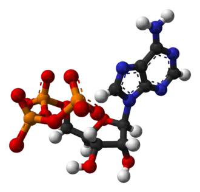
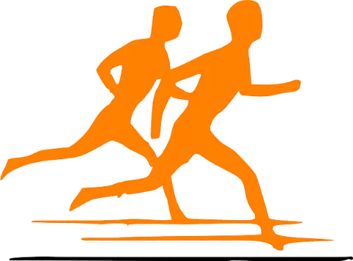
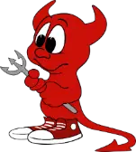
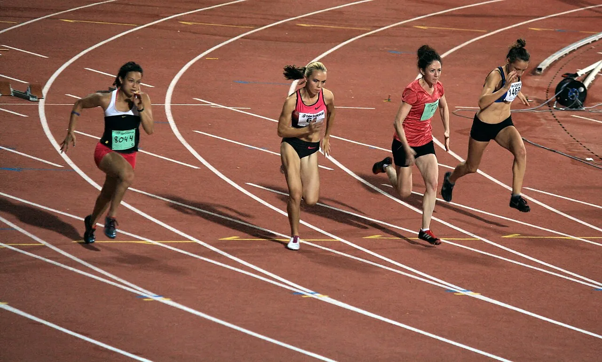
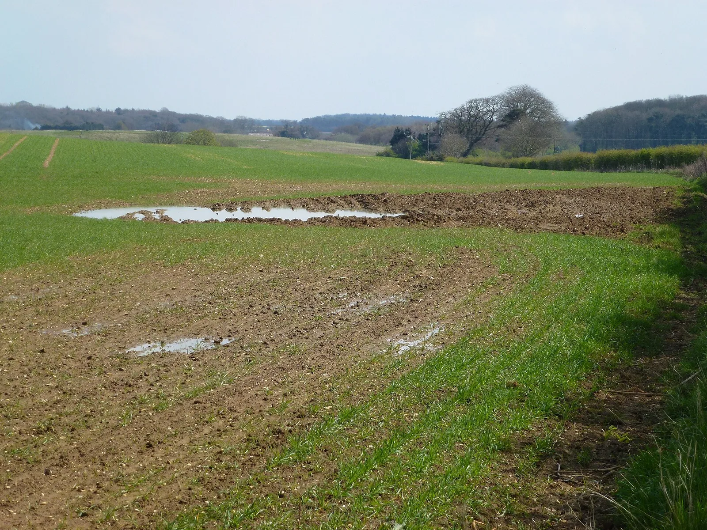
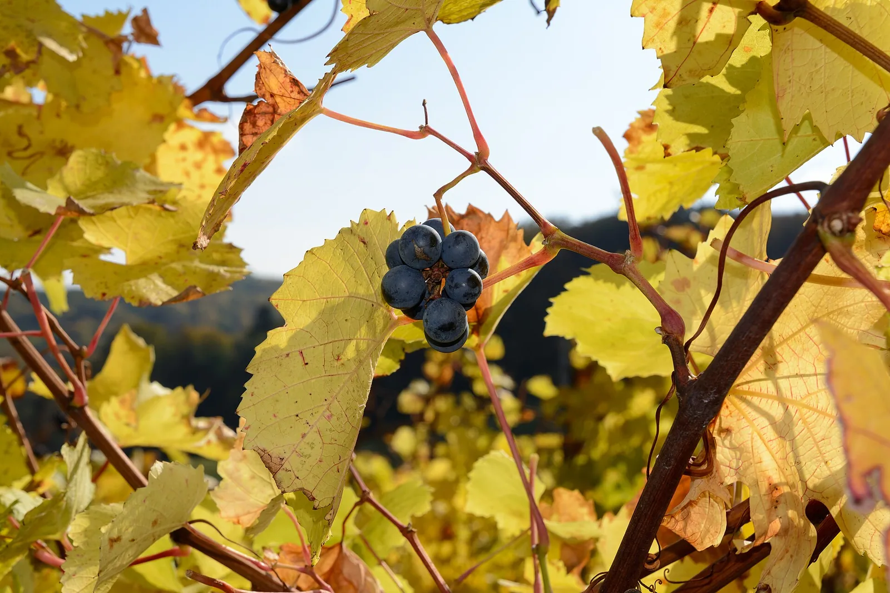
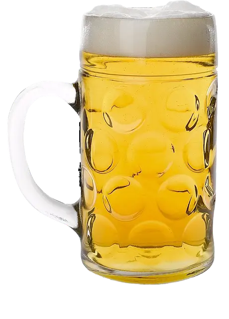
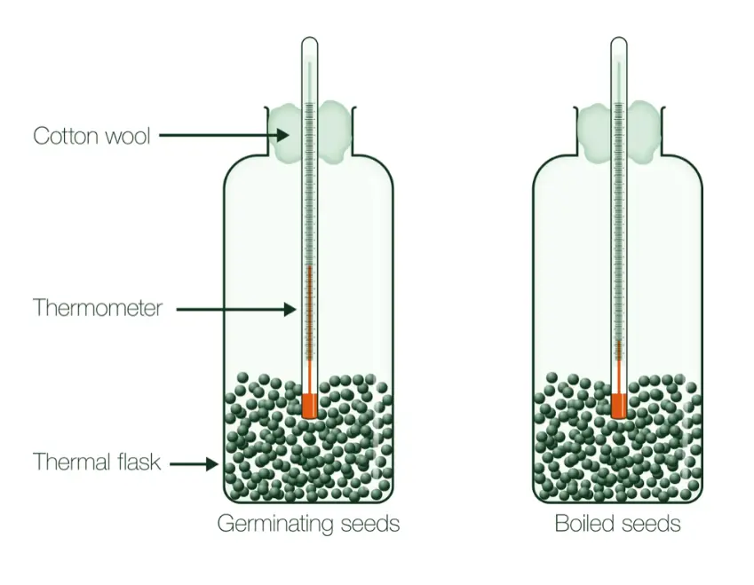
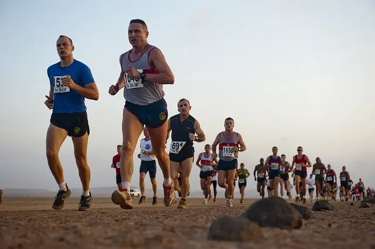

Classroom Projector Deck
1600×900 interactive presentation for the board (spec 2.34–2.39). Click Start presentation below, or press F once presenting for full screen.
1600×900 interactive presentation for the board (spec 2.34–2.39). Click Start presentation below, or press F once presenting for full screen.
What is the word equation for aerobic respiration?
Where in the cell does aerobic respiration happen?
What does anaerobic respiration in muscles produce?
What does anaerobic respiration in yeast produce?
Which molecule provides energy for cells?
Hydrogencarbonate indicator turns yellow. What does this show?
Give the balanced symbol equation for aerobic respiration.
Describe two differences between aerobic and anaerobic respiration in humans.









| Aerobic | Anaerobic | |
|---|---|---|
| Oxygen | Uses oxygen | No oxygen |
| Where | Mitochondria | Cytoplasm |
| Energy released | A lot of energy (ATP) | Only a little energy |
| Products | Carbon dioxide and water | Lactic acid (animals) or ethanol and carbon dioxide (plants, yeast) |


